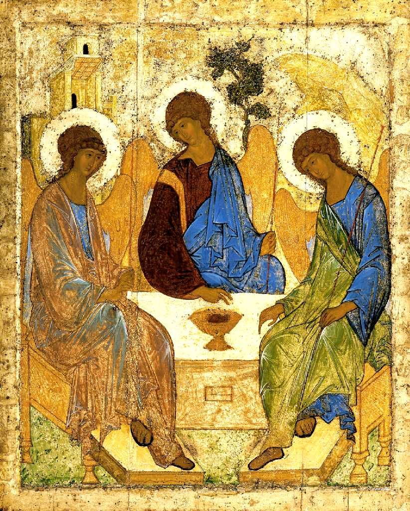
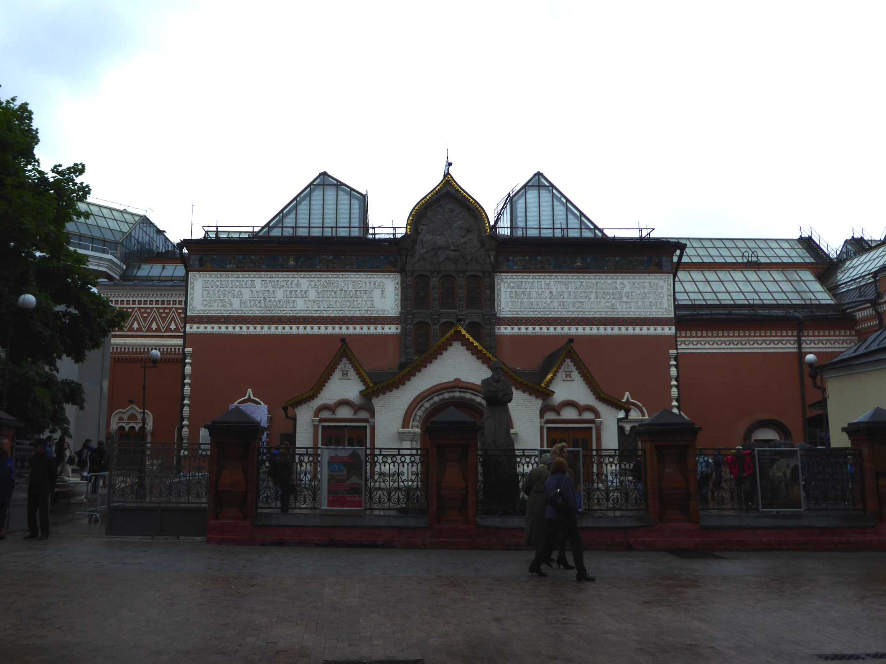
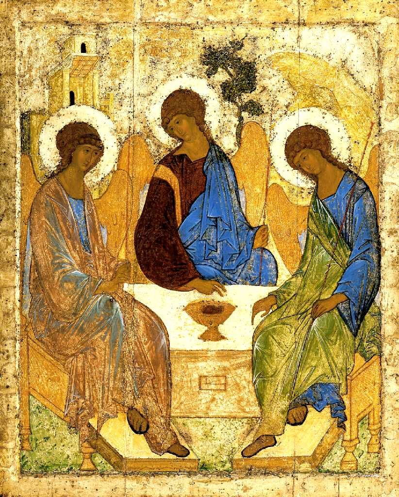

Vladimirskaya
１１３０年前後に描かれたウラジミールの生神女はロシア正教会で最も有名な聖母マリアのイコンで世界中の正教会で模写され続けている

Troitse
１４２０年前後に描かれたロシア美術の到着点と云われる至聖三者のイコン



The State Tretyakov Gallery Moscow
ロシア美術の殿堂と云われるトレチャコフ美術館
Vladimirskaya
１１３０年前後に描かれたウラジミールの生神女はロシア正教会で最も有名な聖母マリアのイコンで世界中の正教会で模写され続けている

Troitse
１４２０年前後に描かれたロシア美術の到着点と云われる至聖三者のイコン